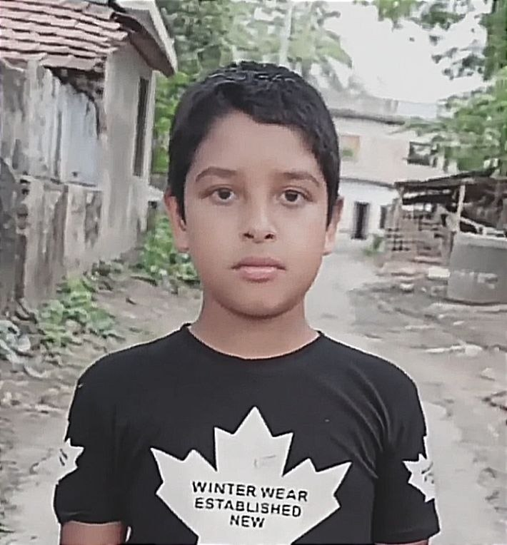

মাত্র ১০ বছর বয়সে সাইবার জগতে প্রবেশ, Tiger M@te-এর মতো একটি ভয়ানক হ্যাকিং টিমের সাবেক নেতা ইয়ামিন নামে এক তরুন
ছবিটি গুগল থেকে সংগ্রহ করা হয়েছে

বাংলাদেশের খুলনার অল্প বয়সী তরুণ নাম ইয়ামিন মাত্র ১০ বছর বয়স থেকেই মোবাইল কম্পিউটার ও অনলাইন জগতের প্রতি আগ্রহী হয়ে ওঠে। সময়ের সঙ্গে সেই আগ্রহ তাকে সাইবার জগতের বিভিন্ন অনৈতিক কর্মকাণ্ডের সঙ্গে জড়িয়ে ফেলে।
একটি প্রতিবেদনে বলা হয়, ২০২০ সাল থেকে ইয়ামিন “Tiger M@te” নামে অনলাইনের পুরো একটি হ্যাকিং টিমের নেতৃত্ব দিয়ে আসছিল। তার নেতৃত্বে দলটি বিভিন্ন অনলাইন অনৈতি কর্মকাণ্ডে জড়িত ছিল বলে উল্লেখ করা হয়েছে।
এক পর্যায়ে একটি হ্যাকিং এর মাধ্যমে প্রায় একটি Bitcoin-এর সমপরিমাণ অর্থ পায় বলে প্রতিবেদনে দাবি করা হয় যা বাংলাদেশি টাকাই প্রাই ১০ লক্ষ টাকা । সে সময় অর্থটি স্থানীয় মুদ্রায় রূপান্তর বা উত্তোলনের উপযুক্ত ব্যবস্থা না থাকায় সেটি ব্যবহার করতে পারেনি।
এর আগে বিভিন্ন সামাজিক যোগাযোগমাধ্যম ও অনলাইন প্ল্যাটফর্ম নিয়ে তার কর্মকাণ্ডের পরিমাণ ৩ লাখেরও বেশি অ্যাকাউন্ট হ্যাক করেছে দাবি করা হয়। তবে একটি রাশিয়ান ওয়েবসাইট অননুমোদিত প্রবেশের চেষ্টার ফলে সে ধরা পড়ে যায় এবং এটাই তার জীবনের অন্যতম আলোচিত ঘটনা হিসেবে বর্ণনা করা হয়েছে।
তার বিরুদ্ধে তদন্তের সময় তার পরিচয় বা কর্মকাণ্ড সম্পর্কে বিশেষ কোনো নির্ভরযোগ্য তথ্য পাওয়া যায়নি ওই প্রতিবেদনে বলা হয়েছে। তবে পরিস্থিতি বুঝতে পেরে ইয়ামিন নিজে থেকেই বিষয়টি পরিষ্কার করার সিদ্ধান্ত নেয়।
ধরা পড়ার পর সে কোনো ধরনের পালানোর চেষ্টা না করে নিজে থেকেই আত্মসমর্পণ করে এবং তার জানা তথ্য তদন্তকারীদের জানাতে রাজি হয়। তার অল্প বয়স এবং স্বেচ্ছায় সহযোগিতা করাই তাকে কোনো শাস্তি দেওয়া হয়নি, কিন্তু তার অনলাইন ব্যাংক একাউন্ট কিছু পরিমাণে টাকা ছিল সেগুলো ক্ষতিপূরণ হিসেবে নেওয়া হয় এবং তাকে ছেড়ে দেওয়া হয়।
পরবর্তীতে তাকে কোনো শাস্তি না দিয়ে Tiger M@te থেকে সম্পূর্ণভাবে বহিষ্কার করা হয়।
শেষ পর্যন্ত Tiger M@te-এর নেতৃত্ব হারানোর পর ইয়ামিন-এর সাইবার জগতের সেই অধ্যায়ের সমাপ্তি ঘটে এটাই উল্লেখ করা হয়েছে।